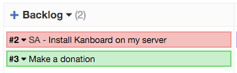
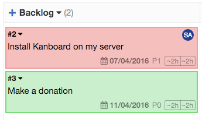

Компактное и развернутое отображение задач¶
Задачи на Доске могут быть отображены в компактном или развернутом виде. Переключение между компактным и развернутым видом может быть выполнено с помощью горячей клавиши “s” или в раскрывающемся Меню (слева вверху) -> Развернуть задачи или Свернуть задачи.
Компактный вид¶

Рисунок. Задачи представлены в компактном виде
Если для задачи назначен исполнитель, то инициалы исполнителя показываются рядом с номером задачи;
Если заголовок задачи слишком длинный, вы можете подвести курсор мышки над задачей и полный заголовок задачи отобразится во всплывающем окне.
Развернутый вид¶

Рисунок. Развернутый вид